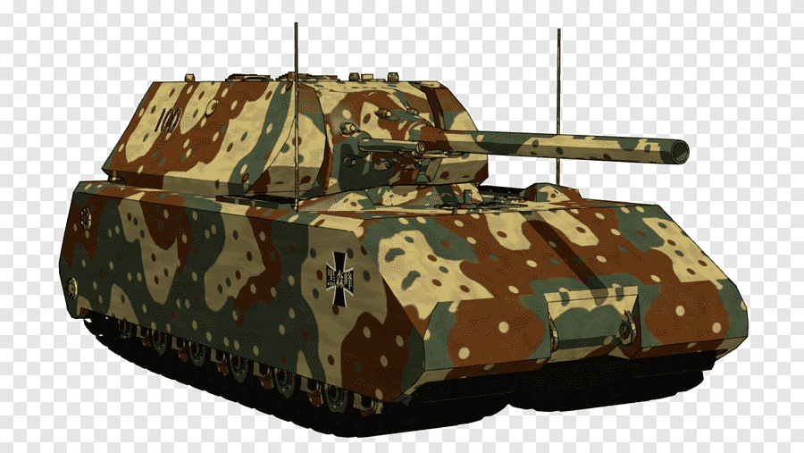
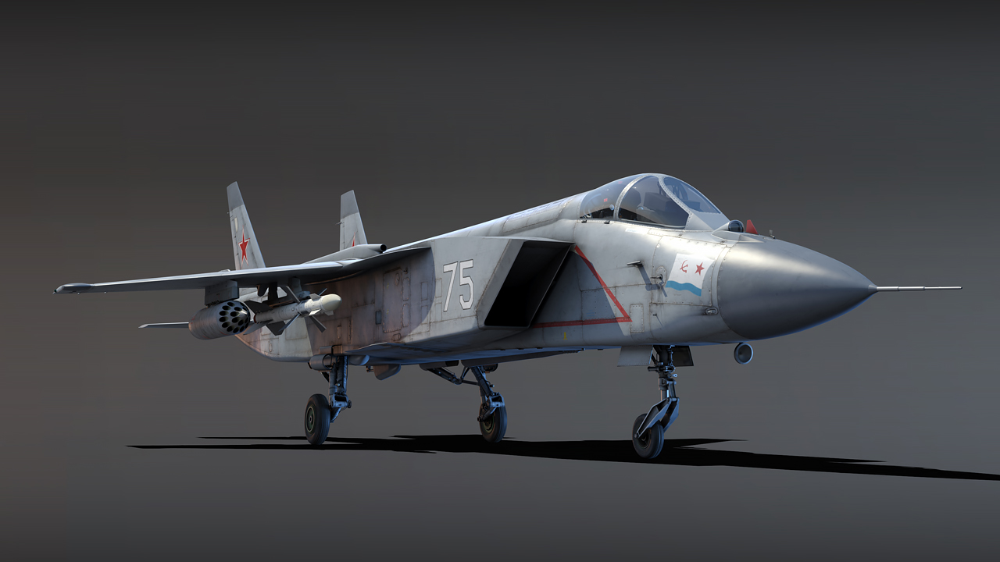

ships are a good choice you can shot and stear the guns, you can fire torpedos and you can upgrade your ship. you can sink the enemy ship
what you can do as ships are
stear the ship
shoot the guns
fire torpedos
and when the enemy is in front you cant fire torpedos or the back cannon or else you will hit the ship
you also have limited heath and torpedos can sink you if you dont click the repair button
if you run out of health you sink
you can also throw smoke bombs and chose what contry you want
you can shoot donw planes upgrade range speed and topedo range
unlock new ships and you can even be diffirant characters
Tanks

tanks are a great choice. you can shoot tanks shells almost instatainiesly. you can a normal gun at the top or on the inside. you can upgrade your gun your range your tank shell your health and speed. for fun you can drive off a cliff and not get hurts but iff you land uppside down you have to wait 10 seconds to flip over again.
The heaviest tank in tank in warthunder is the maus tank it is also very strong. The smalest tank in warthunder is the L3 tank in warthunder
Aircraft

you can also chose aircrafts planes, helicopter and bomber planes. you pick a dog fight with planes, jets, old or modern. you start with a byplane. they arent fast but to shoot a wing on one side you need to shoot 2 wings and many jets back in the day they, the wings were based on the wings of bugs. when your max level you can chose an f 15 fighter jet or an f 16 fighter jet. also you can:
fire missile
shoot the guns
you can also do the cobra manuver if you slow down and point up, you can do a cobra manuver, the su57 fighter jet can do it easily. the bigest and heaviest bomber plane is the b-2 bomber plane. it can drop a 9100 kg bomb. witch can blow up whole city in war thunder.
you can enter a dogfight and you can start a dogfight